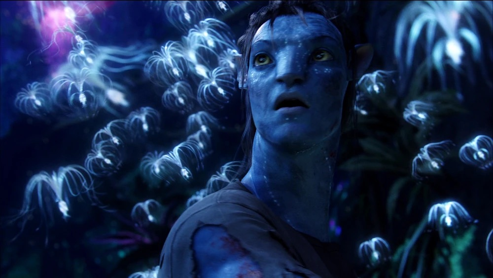
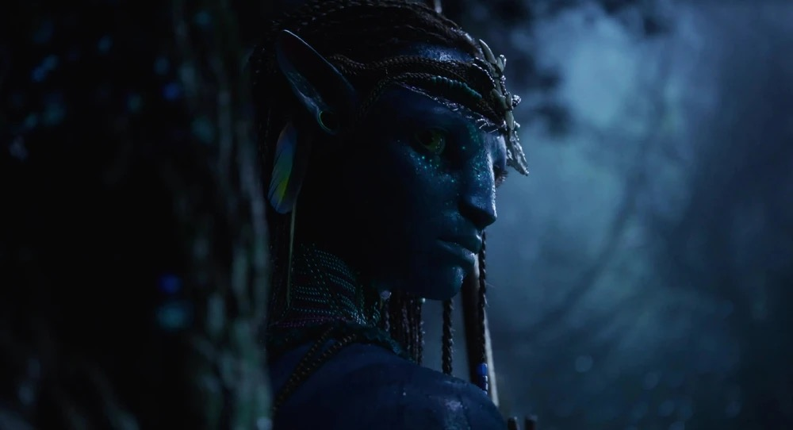
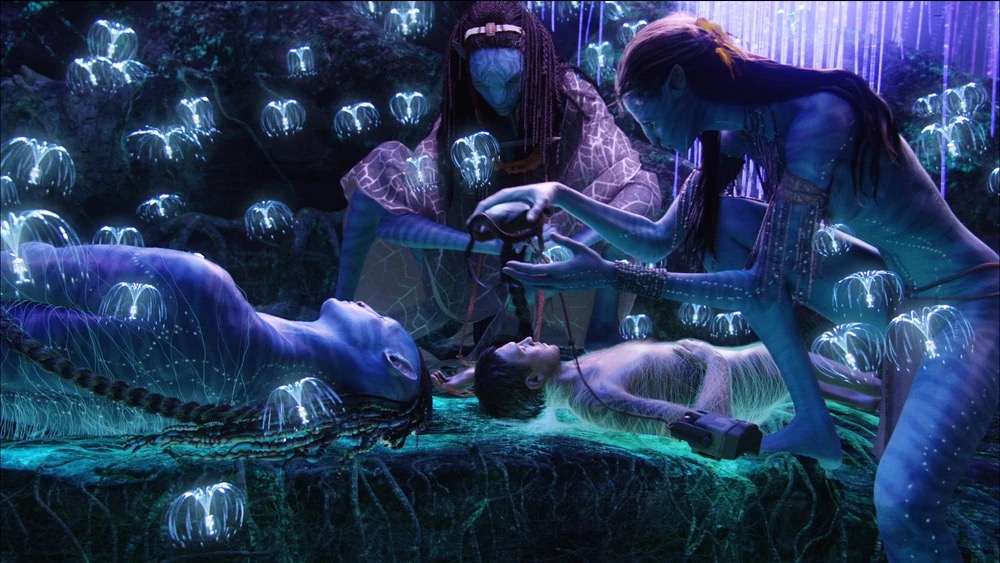

FOREST NETWORK
Glow Paths
Bioluminescent plants react to movement and guide the Na'vi through the night forest.
Energy is borrowed, and one day you have to give it back.
Pandora is a living moon filled with extraordinary landscapes, diverse creatures, and a natural network connected through Eywa.
EXPLORE PANDORASelect a topic to discover how Pandora's land, people, and living network connect.
FOREST NETWORK
Bioluminescent plants react to movement and guide the Na'vi through the night forest.
Above the clouds, where mountains defy gravity,
Pandora reveals one of its greatest wonders.
Eywa is the spiritual heart of Pandora.
Every plant, animal, and Na’vi is connected through this living network.
It represents harmony, memory, and the balance of all life.
The Na’vi live in harmony with nature,
honoring every living soul through their bond with Eywa.
|
 Jake SullyToruk Makto · Chosen by Eywa |
 NeytiriDaughter of the Omatikaya · Voice of the Forest |
 NA'VIREBORN AS NA’VI |
From the skies to the forests,
every creature is connected through Eywa.
Together, they form the living balance of Pandora.
Thank you for exploring the world of Pandora.
ENTER THE MEMORIES